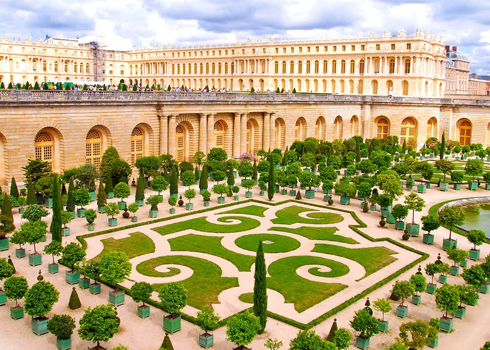

Île-de-France: Fedezd fel Párizs és környékét!
Île-de-France, Párizs szíve, gazdag történelemmel, művészettel és kultúrával várja látogatóit.
A régió nemcsak a fővárosról híres, hiszen a környező vidékek is varázslatos helyszíneket kínálnak a túrázók és a természet szerelmesei számára.Ilyen csodálatos hely Versailles, ahol megtekinthető a híres kastélya, és a gyönyörű parkja!
Párizsi látnivalók:
Eiffel-torony
Louvre Múzeum
Notre-Dame-székesegyház
Champs-Élysées
Párizsi modern városnegyed
Moulin Rouge
Versailles:
Versailles-i kastély

Versailles-i kastély